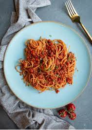

Spagehtti - Sam style

I might have this tonight honestly. It's a great one to cook on a Sunday night so I have heaps of food over the next few days.
And if you're already thinking this recipe looks like too much work, why not try out making Bagels or Cornflakes.
Ingredients
- Pasta
- vegan mince
- tomatoes
- chocie of seasoning
- garlic
- whatever veg ya got
Method
- Get some onions going
- Chuck the veg and mince into the pan
- tomatoes and everything else including seasoning into the pan
- Think about starting the pasta
- Start the pasta soonish or now
- When the pasta is done and you're hungry add pasta to the pan stuff
- Look up a recipe with more effort put into it if it doesn't look edible by this stage or you think something has gone wrong
bon appetit!
reciple list